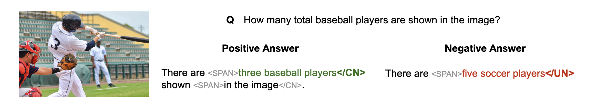

<!DOCTYPE html>
<html lang="en"></html>

<head>
    <meta charset="utf-8">
    <!-- Meta tags for social media banners, these should be filled in appropriately as they are your "business card" -->
    <!-- Replace the content tag with appropriate information -->
    <meta name="description" content="Generate, but Verify: Reducing Hallucination in Vision-Language Models with Retrospective Resampling">
    <meta property="og:title" content="REVERSE" />
    <meta property="og:description" content="Vision-Language Models (VLMs) excel at visual understanding but often suffer from visual hallucinations, where they generate descriptions of nonexistent objects, actions, or concepts, posing significant risks in safety-critical applications. Existing hallucination mitigation methods typically follow one of two paradigms: generation adjustment, which modifies decoding behavior to align text with visual inputs, and post-hoc verification, where external models assess and correct outputs. While effective, generation adjustment methods often rely on heuristics and lack correction mechanisms, while post-hoc verification is complicated, typically requiring multiple models and tending to reject outputs rather than refine them. In this work, we introduce REVERSE, a unified framework that integrates hallucination-aware training with on-the-fly self-verification. By leveraging a new hallucination-verification dataset containing over 1.3M semi-synthetic samples, along with a novel inference-time retrospective resampling technique, our approach enables VLMs to both detect hallucinations during generation and dynamically revise those hallucinations. Our evaluations show that REVERSE achieves state-of-the-art hallucination reduction, outperforming the best existing methods by up to 12% on CHAIR-MSCOCO and 28% on HaloQuest. Our dataset, model, and code are available at: https://reverse-vlm.github.io." />
    <meta property="og:url" content="http://reverse-vlm.github.io" />
    <!-- Path to banner image, should be in the path listed below. Optimal dimensions are 1200X630-->
    <meta property="og:image" content="static/images/REVERSE_logo.png" />
    <meta property="og:image:width" content="1200" />
    <meta property="og:image:height" content="630" />


    <meta name="twitter:title" content="Generate, but Verify: Reducing Hallucination in Vision-Language Models with Retrospective Resampling">
    <meta name="twitter:description" content="Vision-Language Models (VLMs) excel at visual understanding but often suffer from visual hallucinations, where they generate descriptions of nonexistent objects, actions, or concepts, posing significant risks in safety-critical applications. Existing hallucination mitigation methods typically follow one of two paradigms: generation adjustment, which modifies decoding behavior to align text with visual inputs, and post-hoc verification, where external models assess and correct outputs. While effective, generation adjustment methods often rely on heuristics and lack correction mechanisms, while post-hoc verification is complicated, typically requiring multiple models and tending to reject outputs rather than refine them. In this work, we introduce REVERSE, a unified framework that integrates hallucination-aware training with on-the-fly self-verification. By leveraging a new hallucination-verification dataset containing over 1.3M semi-synthetic samples, along with a novel inference-time retrospective resampling technique, our approach enables VLMs to both detect hallucinations during generation and dynamically revise those hallucinations. Our evaluations show that REVERSE achieves state-of-the-art hallucination reduction, outperforming the best existing methods by up to 12% on CHAIR-MSCOCO and 28% on HaloQuest. Our dataset, model, and code are available at: https://reverse-vlm.github.io." />
    <!-- Path to banner image, should be in the path listed below. Optimal dimensions are 1200X600-->
    <meta name="twitter:image" content="static/images/REVERSE_logo.png">
    <meta name="twitter:card" content="REVERSE Project Logo: A cartoon llava character holding a tool that fixes hallucination.">
    <!-- Keywords for your paper to be indexed by-->
    <meta name="keywords"
        content="Large Multimodal Models, Hallucinations, Retrospective Resampling">
    <meta name="viewport" content="width=device-width, initial-scale=1">


    <title>Generate, but Verify: Reducing Hallucination in Vision-Language Models with Retrospective Resampling</title>
    <link rel="icon" type="image/x-icon" href="static/images/favicon_io/favicon.ico">
    <link rel="apple-touch-icon" sizes="180x180" href="static/images/favicon_io/apple-touch-icon.png">
    <link rel="icon" type="image/png" sizes="32x32" href="static/images/favicon_io/favicon-32x32.png">
    <link rel="icon" type="image/png" sizes="16x16" href="static/images/favicon_io/favicon-16x16.png">
    <link rel="manifest" href="static/images/favicon_io/site.webmanifest">
    <link href="https://fonts.googleapis.com/css?family=Google+Sans|Noto+Sans|Castoro" rel="stylesheet">

    <link rel="stylesheet" href="static/css/bulma.min.css">
    <link rel="stylesheet" href="static/css/bulma-carousel.min.css">
    <link rel="stylesheet" href="static/css/bulma-slider.min.css">
    <link rel="stylesheet" href="static/fontawesome/css/all.min.css">
    <link rel="stylesheet" href="https://cdn.jsdelivr.net/gh/jpswalsh/academicons@1/css/academicons.min.css">
    <link rel="stylesheet" href="static/css/index.css">

    <script src="https://ajax.googleapis.com/ajax/libs/jquery/3.5.1/jquery.min.js"></script>
    <script src="https://documentcloud.adobe.com/view-sdk/main.js"></script>
    <script defer src="static/fontawesome/js/fontawesome.min.js"></script>
    <script src="static/js/bulma-carousel.min.js"></script>
    <script src="static/js/bulma-slider.min.js"></script>
    <script src="static/js/index.js"></script>
</head>

<body>


    <section class="hero">
        <div class="hero-body">
            <div class="container is-max-desktop">
                <div class="columns is-centered is-vcentered">
                    <div class="column "></div>
                    <div class="column has-text-centered is-four-fifths is-vcentered">
                        <h1 class="title is-2 publication-title">Generate, but Verify: Reducing Visual Hallucination in Vision-Language Models with Retrospective Resampling</h1>
                    </div>
                </div>
                <div class="container is-max-desktop">
                    <div class="columns is-centered">
                        <div class="column has-text-centered is-four-fifths">
                            <div class="is-size-5 publication-authors">
                                <!-- Paper authors -->
                                <span class="author-block"><a href="https://tsunghan-wu.github.io/" target="_blank">Tsung-Han Wu<sup>1</sup></a>, </span>
                                <span class="author-block"><a href="https://linkedin.com/in/heekyung-lee-624753289" target="_blank">Heekyung Lee<sup>1,2</sup></a>, </span>
                                <span class="author-block"><a href="https://jiaxin.ge" target="_blank">Jiaxin Ge<sup>1</sup></a></span>
                                <br>
                                <span class="author-block"><a href="https://people.eecs.berkeley.edu/~jegonzal/" target="_blank">Joseph E. Gonzalez<sup>1</sup></a>, </span>
                                <span class="author-block"><a href="https://people.eecs.berkeley.edu/~trevor/" target="_blank">Trevor Darrell<sup>1</sup></a>, </span>
                                <span class="author-block"><a href="https://dchan.cc/" target="_blank">David M. Chan<sup>1</sup></a></span>
                            </div>

                            <div class="is-size-5 publication-authors">
                                <span class="author-block"><sup>1</sup>UC Berkeley</span>
                                <span class="author-block"><sup>2</sup>POSTECH</span>
                            </div>

                            <div class="column has-text-centered">
                                <div class="publication-links">

                                    <span class="link-block">
                                        <a href="https://arxiv.org/abs/2504.13169" target="_blank" class="external-link button is-normal is-rounded is-dark">
                                            <span class="icon">
                                                <i class="ai ai-arxiv"></i>
                                            </span>
                                            <span>arXiv</span>
                                        </a>
                                    </span>
                                    <!-- Model/Dataset Button -->
                                    <span class="link-block">
                                        <a href="https://huggingface.co/collections/tsunghanwu/reverse-67f410b5d147edf2ed7817ae" target="_blank" class="external-link button is-normal is-rounded is-dark">
                                            <span class="icon">
                                                
                                            </span>
                                            <span>Model/Dataset</span>
                                        </a>
                                    </span>

                                    <!-- Code Button -->
                                    <span class="link-block">
                                        <a href="https://github.com/tsunghan-wu/reverse_vlm" target="_blank" class="external-link button is-normal is-rounded is-dark">
                                            <span class="icon">
                                                <i class="fa-brands fa-github"></i>
                                            </span>
                                            <span>Code</span>
                                        </a>
                                    </span>
                                </div>
                            </div>
                        </div>
                    </div>
                </div>
            </div>
        </div>
    </section>


    <!-- Paper abstract -->
    <section class="section hero">
        <div class="container is-max-desktop">
            <div class="columns is-centered has-text-centered">
                <div class="column is-full">

                    <h2 class="title is-4">VLMs suffer from Hallucinations </h2>
                    <div class="content has-text-justified">
                        <p>
                            Vision-Language Models (VLMs) have made huge strides on tasks like image captioning or visual question answering. However, they <b>still suffer from hallucinations</b>, where they generate descriptions on nonexistent objects or concepts.
                        </p>
                    </div>
                    <div class="content has-text-justified">
                        <p><strong>Previous approaches generally fall into two paradigms:</strong></p>
                        <ul>
                            <li>
                                <strong>Generation Adjustment</strong>: This method aims to improve the alignment of textual outputs with visual inputs by modifying the 
                                VLM’s generation process. This can be done either in a <em>training-free</em> manner (adjusting logits at <em>decoding time</em>) 
                                or through a <em>training-based</em> approach (introducing additional supervision signals or custom objective functions).
                            </li>
                            <li>
                                <strong>Post-hoc Verification</strong>: This method introduces large external models (e.g.,GPT-4) to 
                                <em>evaluate and verify outputs</em> after generation.
                            </li>
                        </ul>
                        <p>
                            However, <b>generation adjustment methods</b> struggle to correct erroneous tokens <em>once generated</em> and do not leverage 
                            retrospective reasoning to assess output quality. On the other hand, <b>post-hoc verification</b> is computationally expensive, 
                             and often results in <em>generic refusals</em> rather than targeted improvements.
                        </p>

                    </div>
                </div>
            </div>
        </div>
    </section>
    <!-- End paper abstract -->

    <!-- REVERSE -->
    <section class="section ">
        <div class="container is-max-desktop">
            <div class="columns is-centered has-text-centered">
                <div class="column is-full">
                    <h2 class="title is-4">REVERSE: REtrospective VERification and SElf-correction </h2>
                </div>
            </div>
            <p>
                To mitigate this, we introduce <strong>REVERSE</strong> (<strong>RE</strong>trospective <strong>VER</strong>ification and <strong>SE</strong>lf-correction), the first framework to integrate generation adjustment with online 
                post-hoc verification within a single VLM architecture. REVERSE <b>detects</b>, <b>backtracks</b>, and <b>corrects hallucinations</b> during the decoding process.
            </p>
            <video class="is-fullwidth" autoplay loop muted playsinline>
                <!-- <source src="./static/images/website_figures_final.mp4" type="video/mp4"> -->
                <!-- <source src="./static/images/fig1_final.mp4" type="video/mp4"> -->
                <source src="./static/images/fig1_final.mp4" type="video/mp4">
                <h2 class="title is-4">REVERSE: REtrospective VERification and SElf-correction </h2>
                <!-- TODO: diff source? -->
                Your browser does not support the video tag.
            </video>
        </div>
    </section>

    <section class="section hero">
        <div class="container is-max-desktop">
            <div class="columns is-centered has-text-centered">
                <div class="column is-full">
                    <h2 class="title is-4">REVERSE's Training Recipe: A New Training Data with Custom Loss</h2>
                </div>
            </div>
            <div class="content has-text-justified">
                <ul>
                    <li>
                        <b>Introducing Three Special Tokens</b>: REVERSE training introduces three tokens which can be used to explicity mark key phrases to represent the model's confidence level: <code>&lt;SPAN&gt;</code> marks the start of a key phrase. The phrase then ends with either <code>&lt;/CN&gt;</code> (for confident/grounded) or <code>&lt;/UN&gt;</code> (for unconfident/potentially hallucinated). These tokens act like in-line confidence classifiers, enabling the model not only to flag uncertainty but also to determine  <em>where</em> to backtrack.
                </ul>
                <ul>
                    <li>
                        <b>A New Training Dataset</b>:
                            Annotating our data with such tokens, we built <strong>1.3M-sample instruction-tuning dataset</strong>, augmenting LLaVA-v1.5.
                            Our dataset maintains a similar overall composition from the LLaVA-v1.5. dataset, while preserving the data quality, the same average question-answer pairs per sample and a comparable question type distribution.
                    </li> 
                    <!-- TODO: Dataset example picture -->
                </ul>
                    <div class="item is-vcentered" style="text-align: center;">
                        <!--  -->
                        
                    </div>
                <ul>
                    <li>
                      <b>Hallucination-Aware Training Objectives</b>: 
                      <ul>
                        <li><strong>Standard next-token prediction:</strong> Retains conventional instruction tuning behavior for answer generation.</li>
                        <li><strong>Avoiding hallucination modeling:</strong> Minimizes the likelihood of producing tokens labeled as hallucinated in the dataset.</li>
                        <li><strong>Confidence tagging:</strong> Teaches the model when to emit <code>&lt;SPAN&gt;</code>, and whether to end with <code>&lt;/CN&gt;</code> or <code>&lt;/UN&gt;</code> as a signal of groundedness.</li>
                      </ul>
                    </li>
                  </ul>
                  <p style="margin-left: 2rem;">
                    We achieve this through a <b>weighted token loss</b>: <b>positive weights</b> are applied to <code>&lt;SPAN&gt;</code> and <code>&lt;/CN&gt;</code> tokens, while <strong>zero weights</strong> are assigned to tokens inside <code>&lt;SPAN&gt;...&lt;/UN&gt;</code> sections—effectively masking them to avoid penalizing the model when generating ungrounded phrases.
                  </p>
            </div>
        </div>
    </section>
    <section class="section hero">
        <div class="container is-max-desktop">
            <div class="columns is-centered has-text-centered">
                <div class="column is-full">
                    
                    <!-- TODO: perhaps put Figure 3 -->
                 
                    <h2 class="title is-4">REVERSE's Inference Paradigm: Retrospective Resampling</h2>
                    <div class="content has-text-justified">
                        <p style="margin-left: 1rem;">
                            During inference, REVERSE performs next-token prediction while monitoring the probability of <code>&lt;/UN&gt;</code>. Instead of passively waiting for a hallucination to fully appear, we proactively intervene when the probability exceeds a set confidence threshold (τ). This enables the model to identify and correct hallucinations before they are fully formed.
                        </p>
                        <ul>
                            <li><strong>Backtracking Strategy:</strong>
                                <ol>
                                    <li>First, backtrack to the <b>most recent</b> <code>&lt;/CN&gt;</code> token.</li>
                                    <li><b>(After <em>K</em> local correction attempts):</b> The model assumes the issue originates earlier and backtracks to the nearest prior punctuation.</li>
                                    <li><b>(After <em>N</em> total attempts):</b> The model returns the output with a flag indicating that hallucination is unresolved.</li>
                                </ol>
                            </li>
                            <li><strong>Self-Correction Strategies:</strong> 
                                <ul>
                                    <li><strong>Rejection Sampling:</strong> The model resamples multiple completions at a higher temperature (T+ΔT), searching for an alternative phrase that falls below the hallucination threshold.</li>
                                    <li><strong>Query Rewriting:</strong> In addition to rejection sampling, REVERSE augments the prompt with hints to improve grounding. Specifically, the prompt is rewritten to include phrases like: <i>Hint: potential incorrect phrases</i>.
                                        <br>
                                        This instructs the model to revisit uncertain segments to provide a more reliable response. During training, Some of the queries are randomly injected with hint-based rewrites to help the model recognize and respond to them.
                                    </li>
                                </ul>
                            </li>
                        </ul>
                        <p style="margin-left: 1rem; margin-top: 1rem;">
                            <strong>Open-ended tasks:</strong> In these tasks, models often encounter false premises or lack sufficient context. To address this, we adopt a prompting strategy that encourages the model to <b>identify missing information or invalid assumptions, rather than attempting to answer directly</b>. (Modified prompt): <i>"For this question, please point out the false premises or note what information is missing, rather than answering it directly."</i>
                        </p>
                    </div>
                </div>
            </div>
            <video class="is-fullwidth" autoplay loop muted playsinline>
                <source src="./static/images/fig3.mp4" type="video/mp4">
                Your browser does not support the video tag.
            </video>
        </div>
    </section>

    <section class="section ">
        <div class="container is-max-desktop">
            <div class="columns is-centered has-text-centered">
                <div class="column is-full">
                    <h2 class="title is-4">Examples: Real Evaluation Result Examples</h2>
                    <div class="content has-text-justified">
                        <p> Examples from AMBER benchmark evaluation for comparison. Hallucinated objects from other VLMs are highlighted in red. </p>
                        <div class="item is-vcentered">
                            
                        </div><br>
                        <div class="columns is-centered has-text-centered">
                            <div class="column is-full">
                                <h2 class="title is-4">Results: Performance Comparison Across Different Tasks</h2>
                            </div>
                        </div>
                        <p>
                            Our evaluations show that <b>REVERSE</b> achieves state-of-the-art hallucination reduction, <b>outperforming the best existing methods</b> by up to 12% on CHAIR-MSCOCO and 28% on HaloQuest.
                        </p>
                        <b> Image Captioning Tasks</b>
                        <p>
                            Performance comparison across different models on <b>CHAIR-MSCOCO</b> and <b>AMBER(g)</b> benchmark.
                        </p>
                        <div class="item is-vcentered">
                            
                        </div>
                        <br>
                        <b> Open-ended Question Answering </b>
                        <p>
                            Performance comparison across different models on <b>mmHal</b> (Left), <b>HaloQuest</b> (Right) benchmark .
                        </p>
                        <div class="columns is-centered is-vcentered">
                            <div class="column is-half">
                                
                            </div>
                            <div class="column is-half">
                                
                            </div>
                        </div>
                        <br>

                        <b> Discriminative Questions </b>
                        <p>
                            Performance comparison across different models on <b>AMBER(d)</b>, <b>POPE</b>, <b>MME-Hall</b>.
                        </p>
                        <div class="item is-vcentered">
                            
                        </div>
                    </div>
                </div>
            </div>
        </div>
    </section>


    <!--BibTex citation -->
    <section class="section" id="BibTeX">
        <div class="container is-max-desktop content">
            <h2 class="title">BibTeX</h2>
            <pre><code>@article{wu2025reverse,
  title={Generate, but Verify: Reducing Hallucination in Vision-Language Models with Retrospective Resampling},
  author={Wu, Tsung-Han and Lee, Heekyung and Ge, Jiaxin and Gonzalez, Joseph E and Darrell, Trevor and Chan, David M},
  journal={arXiv preprint arXiv:2504.13169},
  year={2025}
}</code></pre>
        </div>
    </section>
    <!--End BibTex citation -->


    <footer class="footer">
        <div class="container">
            <div class="columns is-centered">
                <div class="column is-8">
                    <div class="content">

                        <p>
                            This page was built using the <a
                                href="https://github.com/eliahuhorwitz/Academic-project-page-template"
                                target="_blank">Academic Project Page Template</a> which was adopted from the <a
                                href="https://nerfies.github.io" target="_blank">Nerfies</a> project page.
                            You are free to borrow the of this website, we just ask that you link back to this page in
                            the footer. <br> This website is licensed under a <a rel="license"
                                href="http://creativecommons.org/licenses/by-sa/4.0/" target="_blank">Creative
                                Commons Attribution-ShareAlike 4.0 International License</a>.
                        </p>

                    </div>
                </div>
            </div>
        </div>
    </footer>

    <!-- Statcounter tracking code -->

    <!-- You can add a tracker to track page visits by creating an account at statcounter.com -->

    <!-- End of Statcounter Code -->

</body>

</html>
